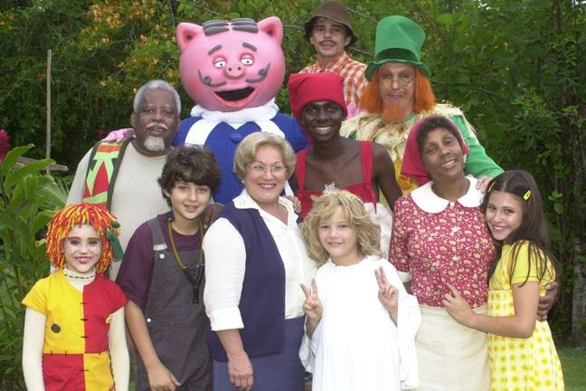

Cidade Invisível é uma série de televisão brasileira de fantasia que estreou na Netflix em 5 de fevereiro de 2021. Criada por Carlos Saldanha,é baseada numa história desenvolvida pelos roteiristas e romancistas Raphael Draccon e Carolina Munhóz. É estrelado por Marco Pigossi no papel de Eric, um policial ambiental que descobre um mundo oculto de entidades mitológicas do folclore brasileiro, enquanto busca uma conexão entre a morte de sua esposa e a misteriosa aparição de um boto-cor-de-rosa morto em uma praia do Rio de Janeiro Devido ao sucesso da primeira temporada, a série foi renovada para uma segunda temporada em 2 de março de 2021.
O cenário principal é um sítio, batizado com o nome de Picapau Amarelo, de onde vem o título da série, onde mora Dona Benta, uma idosa de mais de sessenta anos que vive em companhia de sua neta Lúcia, ou Narizinho como todos dizem e a empregada, Tia Nastácia. Narizinho tem como amiga inseparável uma boneca de pano velho chamada Emília, feita por Tia Nastácia. Em um dos capítulos de Reinações de Narizinho, Emília começa a falar graças à pílula falante do Doutor Caramujo, um médico afamado do Reino das Águas Claras, um palácio que fica no fundo do ribeirão do sítio. Durante as férias escolares, Pedrinho, primo de Narizinho, passa uma temporada de aventuras no Sítio. Juntos, eles desfrutam de aventuras explorando fantasia, descoberta e aprendizagem. Em várias ocasiões eles deixam o sítio para explorar outros mundos, como a Terra do Nunca, a mitológica da Grécia Antiga, um mundo subaquático conhecido como Reino das Águas Claras, e o espaço exterior.
